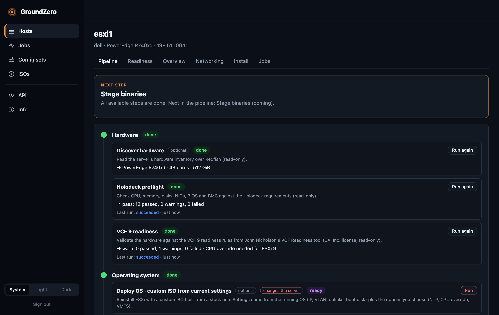
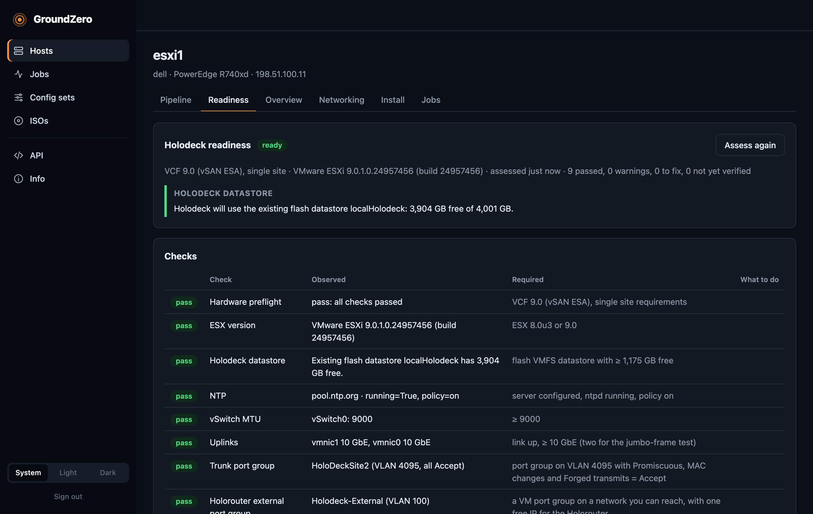
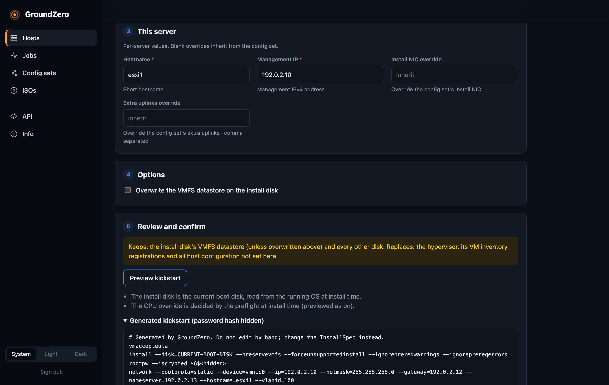
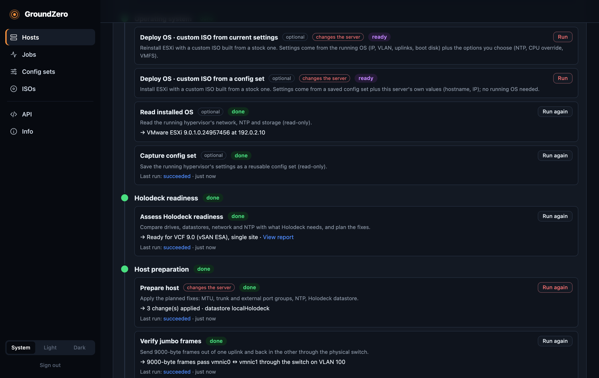
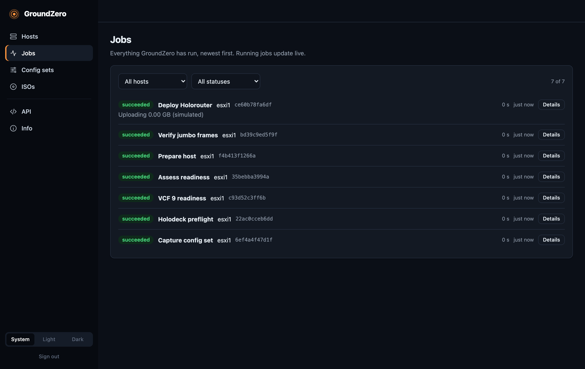

Why GroundZero
Building a Holodeck lab usually means an evening of BMC consoles, hand-edited kickstarts and re-burned ISOs. GroundZero turns it into one guided, API-driven run.
Preflight first
Reads the hardware over Redfish and checks CPU, memory, disks, NICs, boot mode and BIOS (VT-x, VT-d) against Holodeck 9 requirements. Strictly read-only.
Unattended ESXi
Builds a custom ISO from the stock installer, serves it to the BMC as virtual media, boots once and validates build, IP, VLAN, uplinks and NTP afterwards.
Guided pipeline
Each step's outputs are the next step's inputs. The pipeline always recommends the next step, and goes stale on its own when the OS is reinstalled.
Host preparation
Plans and applies what Holodeck needs: MTU 9000, trunk and external port groups, NTP and a datastore. It then proves jumbo frames through your physical switch.
Holorouter deployment
Uploads the Holorouter OVA, sets its network properties, powers it on and waits for SSH. Reading any OVA's inputs and saved appliance profiles are coming next.
Safe by design
Credentials are encrypted at rest and certificates pinned on first use. Destructive steps need a typed confirmation, and VMFS is preserved unless you ask otherwise.
A look inside
The web UI is a thin client of the API: everything you see here can also be done from the CLI or your own automation.










Screenshots from simulation mode: a recorded Dell R740xd and ESXi host, with documentation addresses.
How it works
The web UI, the CLI and your automation all drive the same versioned REST API. Long-running work is a job with live progress, steps and a downloadable diagnostics bundle.
- Register the serverAdd its BMC address. The TLS certificate is pinned on first contact.
- Describe the OSCapture a config set from a running ESXi, or build one in the UI. The hostname and IP stay per server.
- Preview, then installSee the exact kickstart, with secrets masked, then confirm with a typed phrase.
- Follow the pipelineThe next step is always recommended, and blocked steps say exactly which input they're waiting for.
Get started
Python 3.12+ and uv, or a single container with Podman or Docker.
# install and start (keep this running) git clone https://github.com/djsincla/GroundZero.git cd GroundZero && uv sync uv run groundzero serve uv run groundzero ui # in another terminal # register a server and check it (read-only) uv run groundzero hosts add --bmc 198.51.100.11 --name esxi1 uv run groundzero preflight esxi1 # follow the recommended next step uv run groundzero pipeline esxi1
The installation guide covers network requirements, the container option and every step to the Holorouter.
Status
Tested end to end on a Dell PowerEdge R740xd (iDRAC9) with ESXi 9.1.1. Other Redfish BMCs use the generic path and are not yet tested.
| done | Redfish inventory and Holodeck 9 preflight, unattended ESXi 9.x install with validation, config sets, deploy preview, certificate pinning, web UI |
| done | Holodeck readiness, host preparation, jumbo-frame verification, Holorouter deployment |
| next | Deploy any OVA from its own inputs, saved appliance profiles, capture or adopt existing VMs |
| planned | Configure BIOS (VT-x, VT-d, boot mode), cluster mode with address pools and DNS checks, Windows guest customization, the Holodeck deploy itself |